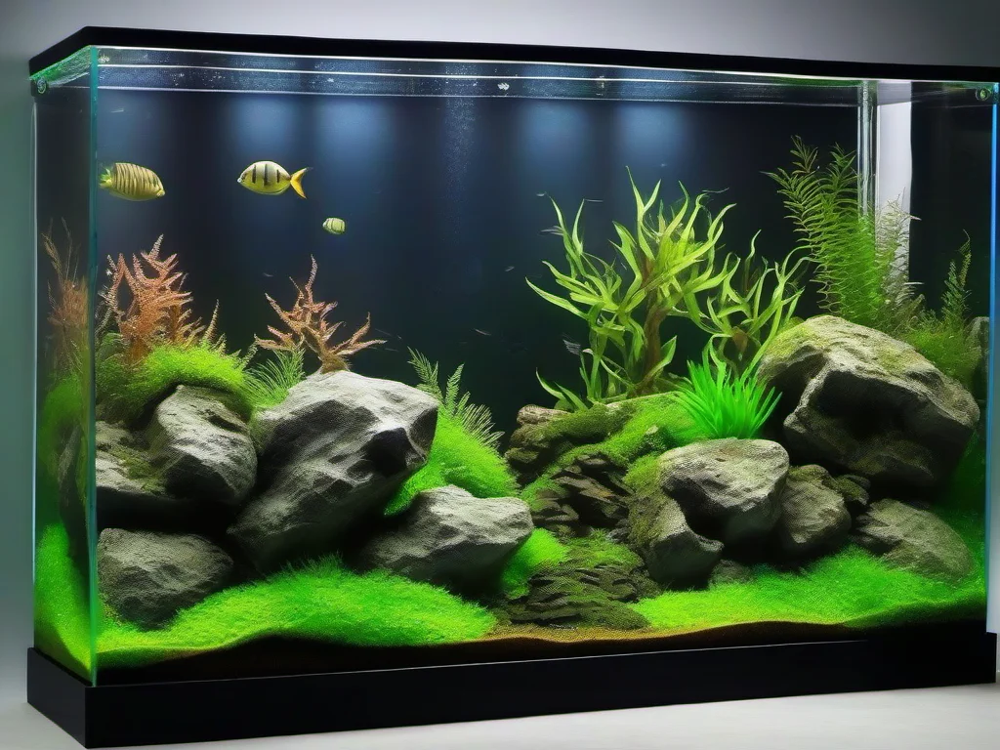

Warum eine 3D-Rückwand? Die Vorteile auf einen Blick
Eine 3D-Rückwand verwandelt jedes Aquarium in ein beeindruckendes Landschaftsbild. Statt einer schlichten einfarbigen Folie oder einem langweiligen grünen Algenbelag an der Rückwand erschaffst du eine plastische Unterwasserlandschaft mit Tiefenwirkung, Höhlen und Terrassen. Die Vorteile liegen auf der Hand:
- Natürliche Optik: Eine selbst gebaute 3D-Rückwand imitiert Felsformationen, Wurzeln oder Flussufer und wirkt wesentlich authentischer als jede Folie.
- Versteckmöglichkeiten: Fische, Garnelen und Wirbellose nutzen die Strukturen als Rückzugsort. Besonders scheue Arten und Jungfische profitieren von den vielen Höhlen und Nischen.
- Struktur für Aufsitzerpflanzen: Moose, Farne und Anubias finden auf der rauen Oberfläche perfekten Halt und wachsen direkt auf der Rückwand an.
- Individuelle Gestaltung: Du bestimmst Form, Farbe und Struktur – von einer glatten Felswand bis hin zu einer verwurzelten Flusslandschaft ist alles möglich.
- Optimale Raumnutzung: Die Rückwand bleibt nutzbar, während du gleichzeitig eine spektakuläre Optik erzielst. Technik wie Heizung oder Filterauslässe lassen sich geschickt hinter der Wand verstecken.
Im Gegensatz zu gekauften Rückwänden aus dem Handel – die oft teuer sind und selten perfekt passen – kannst du eine DIY-Rückwand exakt an die Maße deines Beckens anpassen und ganz nach deinen Vorstellungen formen. Die Materialkosten sind mit etwa 30–80 Euro für ein Standardbecken (100–200 Liter) überschaubar.
Die richtigen Materialien: Was du brauchst
Eine selbst gestaltete Rückwand braucht einen für den dauerhaften Einsatz im konkreten Aquarium geeigneten Materialaufbau. Schaum, Träger, Kleber, Pigmente und Beschichtung müssen zusammenpassen. Dieser Leitfaden ersetzt weder eine Produktfreigabe noch eine Sicherheitsunterweisung. Wenn sich die Eignung nicht klären lässt, verwende eine dafür ausgewiesene Fertigrückwand oder eine außen angebrachte Folie.
PU-Schaum (Montageschaum)
PU-Schaum ist nicht allein deshalb aquariengeeignet, weil er ausgehärtet oder als 2K-Schaum verkauft wird. Wähle nur ein konkret dokumentiertes System für den vorgesehenen Einsatz. Beachte die Verarbeitung, vollständige Aushärtung und Schutzmaßnahmen des Herstellers. Baumarkt-Bauschaum und beliebiges Harz werden durch Kombination nicht automatisch sicher.
Styropor / Polystyrol (XPS)
EPS und XPS sind Polystyrolschäume, PU ist Polyurethan. Die Materialien sind nicht austauschbar. Bearbeitung und Beschichtung müssen für den jeweiligen Werkstoff vorgesehen sein. Übertrage eine Anleitung zum Heißdrahtschneiden von Polystyrol niemals auf PU-Schaum. Dieser Ratgeber empfiehlt keine thermische Bearbeitung.
Epoxidharz-Beschichtung
Eine Beschichtung kann nur im dafür vorgesehenen Materialsystem sinnvoll bewertet werden. „Lebensmittelecht“, „lösemittelfrei“ oder eine harte Oberfläche belegen allein keine Eignung für dauerhaften Wasserkontakt mit Aquarientieren. R&G beschreibt bestimmte eigene Harz-Härter-Systeme für Aquarien und Terrarien und knüpft die Eignung ausdrücklich an fachgerechte Verarbeitung, Mischungsverhältnis und Härtungsbedingungen. Das ist keine Freigabe für jedes Epoxidharz, jede Pigmentzugabe oder jeden Untergrund.
Planungscheckliste: 3D-Rückwand sicher vorbereiten
Die folgenden Punkte sind eine Planungs- und Sicherheitscheckliste, kein universelles Beschichtungsrezept. Gesamtzeit, Schichtaufbau und Freigabe richten sich nach dem gewählten System. Ohne passende Herstellerunterlagen nicht beginnen.
Schritt 1: Planung und Vorbereitung
Plane Platzbedarf, Auftrieb, sichere Befestigung und Reinigungszugang. Öffnungen und Höhlen müssen zum ausgewachsenen Besatz passen, damit Tiere weder stecken bleiben noch hinter die Wand geraten. Heizgeräte und Filter dürfen nicht durch die Gestaltung in ihrer sicheren Funktion beeinträchtigt werden.
Schritt 2: Zuschnitt der Trägerplatte
Lass Material und Zuschnitt passend zur Konstruktion auswählen. Beim Bearbeiten gelten die Schutzmaßnahmen des konkreten Materials und Werkzeugs. Arbeite außerhalb des besetzten Aquariums; Staub, Späne, Kleber und Reinigungsreste dürfen nicht ins Wasser gelangen.
Schritt 3: Grundstruktur aufbauen (Styropor / XPS)
Verwende nur kompatible, für den Aufbau vorgesehene Klebstoffe. Eine beliebige 2K-Kleber- oder Silikonangabe reicht nicht. Kläre mit dem Anbieter, ob das ganze System für dauerhaften Kontakt mit dem vorgesehenen Süß- oder Meerwasser geeignet ist, einschließlich Träger und Farbstoffen.
Schritt 4: Formgebung mit PU-Schaum
PU-Schaum nicht mit Heißdraht, Heißluft oder offener Flamme bearbeiten. Auch ausgehärteter Schaum kann bei Erhitzung gefährliche Zersetzungsprodukte freisetzen. Soudal warnt ausdrücklich vor dem Erhitzen ausgehärteten PU-Schaums. Die EPA-Fachinformation zu Sprüh-Polyurethanschaum erläutert zusätzlich Risiken durch Wärme und Bearbeitungsstaub; sie ist keine Aquarienfreigabe.
Schichtdicke, Feuchtigkeit, Wartezeit und mechanische Nachbearbeitung müssen der Anleitung des konkreten Schaums entsprechen. Eine klebfreie Oberfläche beweist keine vollständige Reaktion. Nicht an noch reagierendem Schaum schneiden. Auch kalte Bearbeitung ist nicht risikofrei: geeignete Staubkontrolle, Augen- und Hautschutz nach Sicherheitsdatenblatt verwenden. Halte unbeteiligte Personen und Tiere vom Arbeitsbereich fern.
Schritt 5: Strukturierung mit Farbe und Sand
Nur vom Systemanbieter zugelassene Pigmente und Zuschläge verwenden. Zusätze können Verarbeitung und Endprodukt beeinflussen. „Lebensmittelechte Farbe“ ist kein Ersatz für die Bewertung des gesamten Unterwasseraufbaus. Überarbeitungsfenster und Oberflächenvorbereitung zwischen Schichten nicht selbst festlegen.
Schritt 6: Versiegelung mit Epoxidharz
Harz und Härter exakt im vorgeschriebenen Verhältnis und Verfahren mischen; nicht durch zusätzliche Härtermenge vermeintlich beschleunigen. Zulässige Ansatzmenge, Schichtdicke, Verarbeitungstemperatur, Überarbeitung und vollständige Härtung dem konkreten Datenblatt entnehmen. Eine zweite Schicht garantiert weder Porenfreiheit noch Tierverträglichkeit. Nach pauschal 24–48 Stunden gibt es keine allgemeine Freigabe fürs Aquarium.
Arbeitsschutz: Ungehärtete Komponenten können gesundheitsgefährlich sein. Sicherheitsdatenblätter lesen, Exposition minimieren, geeignete Belüftung sowie die dort vorgesehenen chemikalienbeständigen Handschuhe und Augenschutz sicherstellen. Beliebige Einweghandschuhe reichen nicht automatisch. CDC/NIOSH weist auf passende Schutzausrüstung und die Grenzen des Geruchssinns hin: Geruchsfreiheit ist kein Sicherheitsnachweis. Bei Schwangerschaft, Stillzeit oder Kinderwunsch empfiehlt NIOSH, das Mischen von Harzen zu vermeiden.
Vor dem Einsatz müssen alle für das System vorgeschriebenen Härtungs- und Nachbehandlungsschritte abgeschlossen sein. Klebrige, weiche oder sonst fehlerhafte Beschichtungen nicht ins Aquarium geben. Auch eine harte, geruchsfreie Schicht und ein unauffälliger Wassertest beweisen keine allgemeine Ungiftigkeit. Bei unklarer Verarbeitung oder fehlender Freigabe den Anbieter fragen, statt Tiere als Verträglichkeitstest einzusetzen.
Schritt 7: Bepflanzung der Rückwand
Der große Vorteil einer 3D-Rückwand: Du kannst sie direkt bepflanzen! Moose, Farne und Aufsitzerpflanzen wachsen auf der rauen, mit Sand bestreuten Oberfläche von allein an. Besonders gut geeignet sind:
- Javamoos (Taxiphyllum barbieri) – wächst auf jeder Oberfläche, bildet dichte grüne Teppiche
- Weeping Moos (Vesicularia ferriei) – hängender Wuchs, ideal für Überhänge
- Anubias-Arten – aufsitzend auf Felsvorsprüngen, pflegeleicht
- Javafarn (Microsorum pteropus) – ideal für größere Strukturen
- Bucephalandra – dekorative Aufsitzerpflanze mit schönen Blattfarben
Befestige die Pflanzen mit etwas Spezialkleber für Aquarienpflanzen (Gel-Kleber auf Cyanacrylat-Basis) oder binde sie mit Angelschnur fest, bis sie von selbst angewachsen sind. Nach 3–4 Wochen haben sich die Pflanzen festgesetzt und du kannst die Schnur entfernen.
🛒 Pflanzen und Moose für die Rückwand
Javamoos, Anubias & Co. – alles für die Begrünung deiner 3D-Rückwand.
👉 Pflanzen bei Amazon entdeckenBefestigung im Aquarium: Verkleben mit Silikon
Die Befestigung muss zum Material, zur Beschichtung, zum Auftrieb der Rückwand und zum Aquarium passen. Kläre Produktverträglichkeit, Klebeflächen, Fugenform und Fixierung mit den beteiligten Herstellern. Große Silikonraupen oder flächige Klebungen sind kein universell geeignetes Verfahren. Das OTTO-Datenblatt für S 28 weist auf Einschränkungen flächiger Einkomponenten-Silikonverklebungen hin. Erst nach vollständiger Aushärtung unter den produkt- und fugenspezifischen Bedingungen belasten oder befüllen, nicht pauschal nach 24–48 Stunden. Siehe auch den Leitfaden zu Verklebung und Aushärtung.
Eine Rückwand nicht allein auf vermeintlich haltenden Wasserdruck oder ein improvisiertes Einklemmen verlassen. Die Befestigung muss Aufschwimmen, Umkippen und das Einklemmen von Tieren verhindern, ohne tragende Beckenteile oder Nähte zu beschädigen. Eine sichere Konstruktion vor dem Einsetzen von Tieren fachlich klären.
Vorteile vs. einfarbige Rückwände und Folien
Eine 3D-Rückwand ist nicht die einzige Option – doch sie bietet gegenüber Alternativen deutliche Vorteile:
| Kriterium | 3D-Rückwand (DIY) | Einfarbige Folie | Fertige Rückwand |
|---|---|---|---|
| Optik | 🌟🌟🌟🌟🌟 (plastisch, natürlich) | 🌟🌟 (flach, einfach) | 🌟🌟🌟🌟 (gut, aber standardisiert) |
| Kosten | 30–80 € | 5–15 € | 60–200+ € |
| Passgenauigkeit | 🌟🌟🌟🌟🌟 (maßgeschneidert) | 🌟🌟🌟 (zuschneidbar) | 🌟🌟 (Standardmaße) |
| Versteckplätze | 🌟🌟🌟🌟🌟 (viele Höhlen) | 🌟 (keine) | 🌟🌟🌟 (je nach Modell) |
| Bepflanzbar | ✅ Ja | ❌ Nein | ✅ Teilweise |
| Arbeitsaufwand | Systemabhängig | 5 Minuten | 1 Stunde |
Fazit des Vergleichs: Eine DIY-3D-Rückwand erfordert deutlich mehr Zeit und handwerkliches Geschick als eine einfache Folie, liefert aber ein unschlagbar natürliches Ergebnis, das dein Aquarium auf ein ganz neues Niveau hebt. Für Aquascaper und gestaltungsbegeisterte Aquarianer ist sie die erste Wahl.
Pflege und Reinigung der 3D-Rückwand
Eine gute Nachricht: Die Pflege einer 3D-Rückwand ist unkompliziert. Die raue, mit Epoxidharz versiegelte Oberfläche ist glatt genug, um Algenansätze regelmäßig zu entfernen, und zugleich strukturiert genug, dass Pflanzen gut haften:
- Algen: Ein weicher Schwamm oder eine Zahnbürste mit weichen Borsten entfernt Fadenalgen und Kieselalgen von der Oberfläche. Bei starkem Algenbefall hilft eine gezielte Algenbekämpfung.
- Bodengrundreinigung: Mulm, der sich in den Strukturen absetzt, kann mit einer feinen Mulmglocke oder einer Pipette abgesaugt werden.
- Pflanzenpflege: Moose und Aufsitzerpflanzen gelegentlich zurückschneiden, damit sie nicht überwuchern und die Optik beeinträchtigen.
- Haltbarkeit: Risse, Ablösungen oder weiche Stellen müssen geprüft werden. Nicht im besetzten Aquarium schleifen oder mit frischem Harz überarbeiten. Reparatur und erneute Freigabe richten sich nach dem Systemanbieter; bei Bedarf die Rückwand sicher ausbauen lassen.
Eine selbst gebaute 3D-Rückwand ist das Herzstück jedes naturnahen Aquariums. Sie verwandelt ein einfaches Glasbecken in eine lebendige Unterwasserlandschaft, die Fischen und Pflanzen gleichermaßen zugutekommt.
Häufig gestellte Fragen (FAQ)
Ist PU-Schaum giftig für Fische?
Das lässt sich nicht für beliebigen PU-Schaum beantworten. Auch eine Epoxidharzschicht macht unbekannte Materialien nicht automatisch tierverträglich. Entscheidend sind das konkret geeignete Gesamtsystem und die fachgerechte Verarbeitung.
Kann ich normale Bauschaum-Dosen aus dem Baumarkt verwenden?
Nicht pauschal. Die Bezeichnung 1K oder 2K und „wasserfest“ beweisen keine Aquarieneignung. Kläre die konkrete Verwendung mit dem Hersteller, bevor du das Material kaufst oder verarbeitest.
Wie lange hält eine selbst gebaute Rückwand?
Eine allgemeine Lebensdauer lässt sich hier nicht zusagen. Materialsystem, Verarbeitung, mechanische Belastung und Zustand bestimmen, ob die Rückwand weiter genutzt werden kann. Kontrolliere sie regelmäßig auf Schäden.
Kann ich die Rückwand später wieder ausbauen?
Der Ausbau muss geplant werden, ohne tragende Aquariennähte oder Scheiben zu beschädigen. Nicht zwischen unklaren Klebeverbindungen schneiden. Bei fest verklebten Rückwänden oder gefährdeten Beckennähten einen Aquarienbauer hinzuziehen.
Welche Fische brauchen besonders viele Verstecke?
Besonders scheue Arten wie Zwergbuntbarsche, Harnischwelse, Panzerwelse und fast alle Garnelenarten profitieren enorm von einer strukturierten Rückwand mit vielen Höhlen. Auch für die Nachzucht sind die Versteckmöglichkeiten wertvoll, da Jungfische dort Schutz finden.
Kann ich die Rückwand auch ohne Epoxidharz nutzen?
Das hängt vom konkreten Rückwandmaterial und seiner vorgesehenen Verwendung ab. Nicht jede Aquarienrückwand benötigt Epoxidharz; umgekehrt macht eine Beschichtung ungeeigneten Bauschaum nicht automatisch sicher. Die Herstellerangaben zum vollständigen Aufbau sind maßgeblich.
Fazit
Eine selbst gestaltete 3D-Rückwand kann sinnvoll sein, wenn Materialeignung, Verarbeitung und sichere Befestigung geklärt sind. Ohne diese Grundlagen ist eine dafür vorgesehene Fertiglösung die bessere Wahl. Keine pauschale Trocknungszeit und kein Geruchstest ersetzt diese Prüfung.
Arbeitsplatzsicherheit und Tierverträglichkeit sind zwei getrennte Fragen. Beide müssen vor der Nutzung beantwortet sein. Insbesondere gehört erhitzter PU-Schaum nicht in einen Hobby-Arbeitsablauf.
Mehr zur Gestaltung deines Aquariums findest du in unseren Guides zum Aquascaping für Anfänger und zum Einsteiger-Aquarium. Auch Wurzeln und Holz lassen sich perfekt mit einer 3D-Rückwand kombinieren.